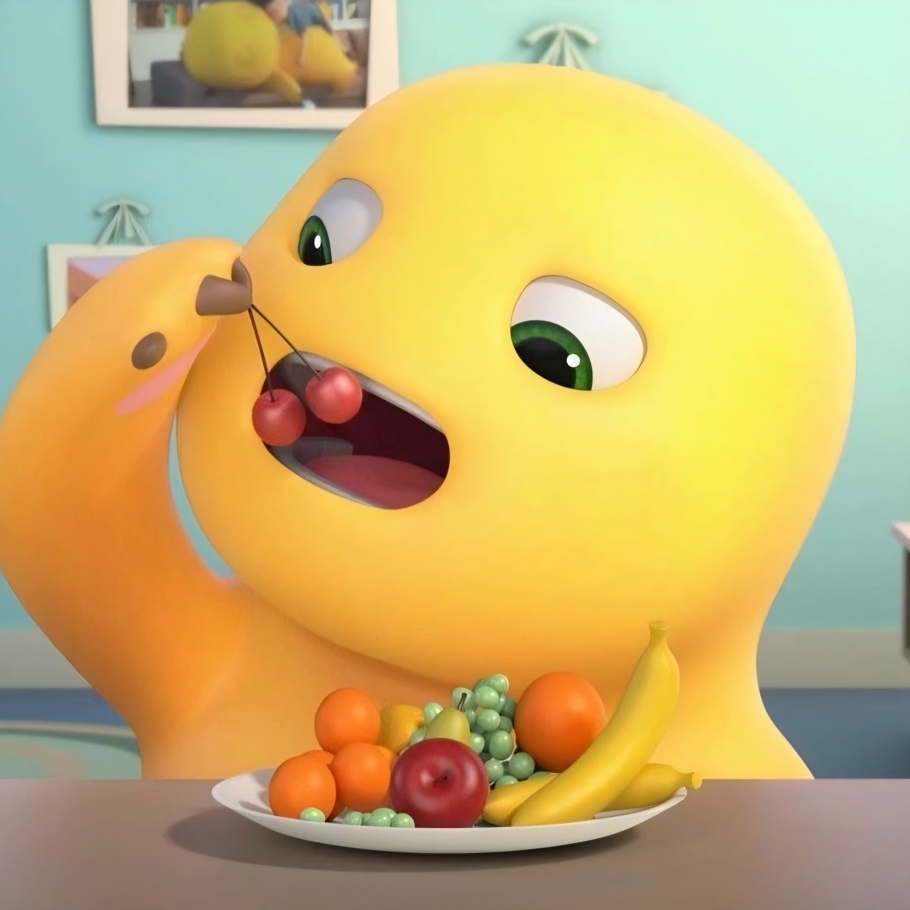
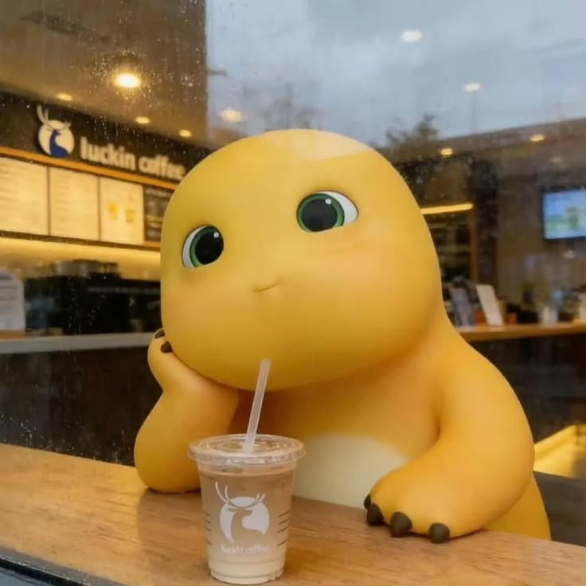
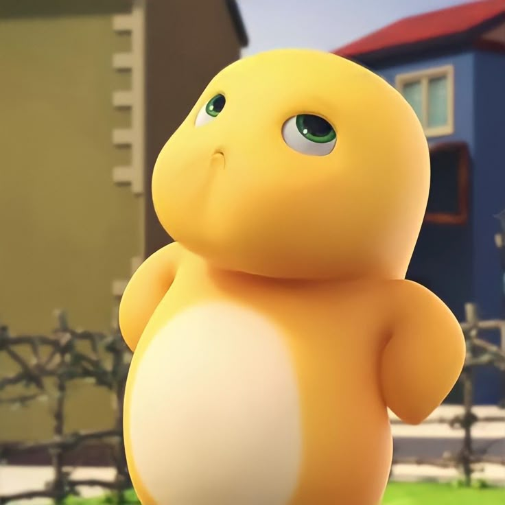

Makanan apa yang paling disukai Nailong dan bikin dia makin gemoy?

Minuman apa yang paling disukai Nailong dan bikin dia makin gemoy?

Siapa nih yang hari ini lagi ulang tahun dan makin cantik/lucu?
ciee uda kepala dua nich.. selamat bertambah usia yaa! nda kerasa ya, akhirnya nambah umur lagi. semoga di umur yang baru ini u bisa nemuin lebih banya hal yang bikin u bahagia, lebih banya alasan buat senyum, dan tentunya lebih banya hal baik yang datang ke hidup u.
i juga berharap semua yang selama ini u usahain, sekecil apa pun itu, pelan-pelan bisa terwujud. kalo ada sesuatu yang belum sesuai sama yang u harapkan, semoga u tetap punya kekuatan buat terus jalan. jangan terlalu keras sama diri sendiri juga, u nda harus selalu kuat dan nda harus selalu baik-baik aja.
semoga tahun ini u bisa lebih banya menikmati hidup, nda terlalu sering overthinking, nda terlalu banya memendam semuanya sendirian, dan bisa lebih sayang sama diri u sendiri. because menurutku u juga pantas mendapatkan hal-hal baik yang selama ini u kasih ke orang lain.
makasii yaw selama ini uda mau cerita banya hal ke aku. dari cerita random, yapping tiap hari, keluh kesah, sampai hal-hal kecil yang mungkin menurut u nda penting. honestly, i seneng bisa dengerin semuanya. but.. kalo suatu saat u ngerasa cape or cuma butuh tempat buat cerita, u know where to find me.
i mungkin nda selalu tau harus ngomong apa atau bisa bantu banya, tapi setidaknya i bakal berusaha buat dengerin u.
and on your special day, I just want to say: i hope life treats you kindly. semoga u selalu dikelilingi orang-orang yang tulus, disayang dengan cara yang baik, dan diberikan banya alasan untuk tetap tersenyum.
semoga tahun ini menjadi salah satu chapter yang paling indah buat u. and hopefully, i masih boleh jadi bagian kecil dari cerita kamu di chapter itu.
once again, happy birthday yaa lesung pipi acuu. semoga semua doa baik yang u panjatkan satu per satu menemukan jalannya. btw kadonya menyusul yaw xixixii💛